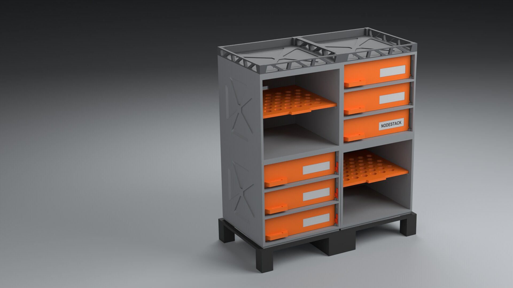
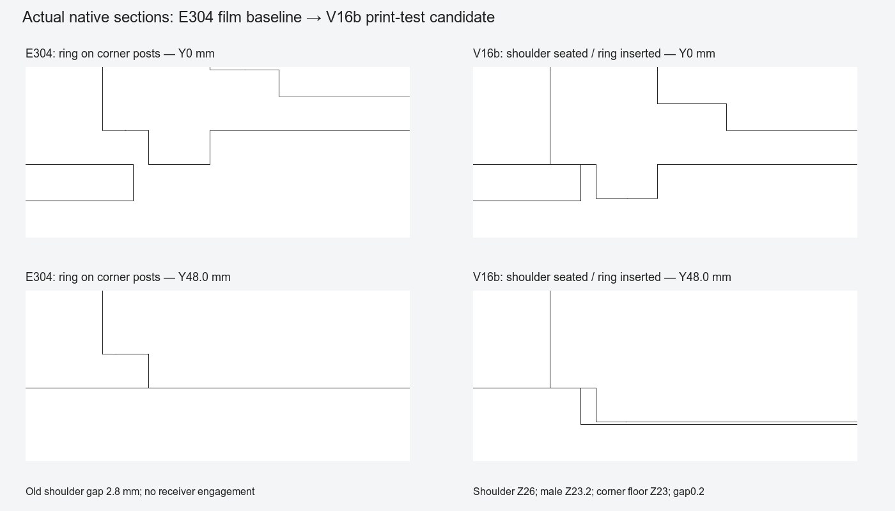

design:os · Blender native · review r02 · digital prototype
Nodestack: modular desk storage, built and reviewed with evidence.
A Blender native modular-storage study: orange drawers, open shelves and a system verified across 2×2, 2×3 and 4×2 digital configurations. Published with authorized native still images; video and geometry withheld pending reference rights verification. Coordinated through OpenAI Dots and Antigravity.
Digital print-test candidate. Zero physical samples recorded; manufacture remains BLOCKED pending physical printing, fit, load capacity and fatigue qualification.
- Configurations
- 2×2 / 2×3 / 4×2three arrangements checked
- Parts checked
- 145 digital instances32, 45, 68 in v16b package
- Blender pipeline
- Native data APICycles Metal 5.2.0 LTS
- Coordination
- OpenAI Dots + AGHuman direction & review
- Physical status
- 0 samples recordedManufacture BLOCKED
- Reference design
- SMACKMAX_NODESTACK // SERVICE PACK

Nodestack 2×2 canonical arrangement in studio render, Blender native Cycles Metal (E304 frozen base)
sha256 · 7876f8052687…Visual evidence · 7 proof views
Verified visual proof gallery
Seven native render views inspect mechanisms, arrangement scales, internal CAD wireframe, exploded module breakdown and 32-part inventory. All stills are rendered native in Cycles Metal.
Drawer stroke · native stills from verified scene hashes; full digests in media manifest.
01 / 07 · media · r02Engineering analysis · base seating revision
Base seating: E304 baseline versus v16b candidate
The technical cross-section comparison below illustrates the base seating revision between the earlier frozen E304 baseline and the delivered v16b candidate.

Direct technical section comparison: E304 frozen baseline (left) versus v16b print-test candidate (right)
source · nodestack-v16b-base-before-after.pngBaked dimension values: In the E304 baseline, the male top reaches Z 28.8 with the receiver mouth at Z 26.0, leaving a shoulder gap of 2.8 mm and zero receiver engagement (the male ring rests above corner posts without entering the receiver cavity). In the v16b print-test candidate, base seating is corrected: male bottom sits at Z 23.2, corner receiver floor at Z 23.0, with shoulder and foot rim aligned at Z 26.0. This establishes 2.8 mm vertical engagement, a 0.2 mm floor gap, and 0.4 mm nominal lateral clearance per side.
The base functions as gravity bearing and lateral registration only; it provides no positive vertical lock or physical load rating. The shoulder carries vertical contact while the receiver floor maintains clearance.
Configurations · measured assembly
Three verified arrangements
Modules assemble in vertical column and horizontal tier layouts using top plates, raised feet, inter-module links and rear alignment keys. All dimensions are measured directly from the delivered v16b package manifest.
| Arrangement | Parts | Width × depth × height | Digital hash |
|---|---|---|---|
| 2×2 · canonical | 32 | 208.0 × 108.0 × 229.9 mm | ec9e1437481b… |
| 2×3 · tall | 45 | 208.0 × 108.0 × 327.1 mm | 4fc4d7ff8e5d… |
| 4×2 · adjacent | 68 | 408.0 × 108.0 × 229.9 mm | 340c4f760722… |
These values represent digital bounding bounds from the manifest, not physical load capacity or proof of unconstrained stacking.
Coordination & execution
Human direction, OpenAI Dots, and Antigravity
The project connected a human design brief to autonomous agent planning, native Blender geometry construction, and independent evidence-based auditing.
- Human direction sets the target: The owner defined functional requirements, aesthetic criteria, drawer stroke targets, and feedback on module base seating.
- Antigravity executes procedural builds: Antigravity drove the Blender 5.2.0 LTS Python data API to construct watertight geometry, assign procedural PBR shaders, and execute headless Cycles rendering.
- Dots coordinates independent review: OpenAI Dots coordinated independent verification gates, auditing mesh topology, boundary manifolds, dimensional envelopes, and base-seating clearances.
Tool attribution factually describes the orchestration pipeline; it does not imply endorsement by OpenAI or external model providers.
Evidence & physical boundaries
What digital checks prove and what remains unverified
The delivered digital package passed automated gates for 32, 45, and 68 part configurations, covering closed manifold solids, bounding envelopes, and STL export/reopen checks.
Sampled drawer motion was evaluated across discrete poses from a 0–70 mm stroke. Discrete service checks verified key extraction and unstacking clearance. These tests establish discrete kinematic clearance, not continuous swept volumes or dynamic friction.
Retainer service routing: the corrected retainer route slides 26 mm before dropping. The earlier 24 mm route retains a known collision failure (approximately 1.92 mm³ per foot in nodestack-v16-ca2-connector-service-whole.json); the builder regression that misses that intermediate collision at -2 mm remains unresolved.
Physical manufacture is BLOCKED: Printer nozzle calibration, thermal shrinkage, FDM layer adhesion, surface friction, drawer rattle, structural fatigue, and tip stability remain unverified. Zero physical parts have been printed. Physical testing must begin with small mating subsets before full tower assembly.
Numerical caveats: raw seating and seam intersections reach up to 0.2738 mm³ in static poses; 64 / 90 / 136 unchecked items across the three configurations reflect undeclared bore-feature checks and report-only overhang areas.
Provenance & licensing
Reference design attribution and rights status
The reference design is NODESTACK // SERVICE PACK by SMACKMAX_ (@SMACKMAX) on Printables. This project is an independent procedural reconstruction and digital engineering study; it does not claim original design ownership.
The reference-design redistribution license has not been verified. The repository’s MIT software license covers codebase scripts, but does not grant third-party design or media distribution rights. At the owner’s direction, geometry downloads (STLs, .blend files, 3MF, ZIP archives) and video files are withheld from public distribution.
Frequently asked questions
Questions & answers
What is Nodestack?
This project studies a modular desk-storage system with drawer and shelf bays, raised feet, top plates and serviceable connections. The reference design is NODESTACK // SERVICE PACK by SMACKMAX_ on Printables.
How did OpenAI Dots and Antigravity contribute?
OpenAI Dots coordinated Antigravity planning and building, followed by separate evidence-based reviews. Blender native assets and rendering supported the project. Human direction and feedback shaped the requirements and revisions. This is a description of the project workflow, not an OpenAI endorsement.
Which configurations were checked?
The v16b digital print-test package contains a 2×2 canonical arrangement with 32 parts, a 2×3 tower with 45 parts and a 4×2 adjacent arrangement with 68 parts. These checks cover those three configurations, not every possible combination.
Is this ready for manufacturing?
No. Physical printing, fit, friction, strength, load capacity and stability remain unverified. The package is a digital print-test candidate, and manufacture remains blocked pending physical evidence.
Why are there no geometry or video downloads?
The reference-design redistribution license has not been verified. The owner chose to publish still imagery and technical narrative only, and hold video and geometry downloads. No Blender files, STLs, reference photographs or geometry archives are distributed on this page.
Do the still images show the v16b geometry?
The render source for gallery stills is the earlier frozen E304 base, with separately corrected modular scenes. The v16b print-test candidate improves base seating as shown in the engineering cross-section comparison. Video and full animations are withheld pending reference rights verification. The stills provide visual explanation and do not prove a physical assembly route.
DESIGN:OS ecosystem
Cross-tool pipeline
Nodestack is built using the verified workflows and quality gates of the design:os engineering suite.